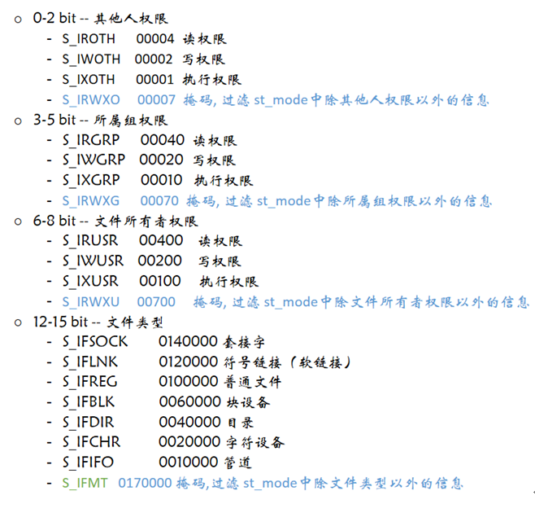
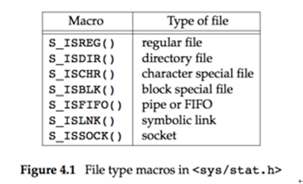
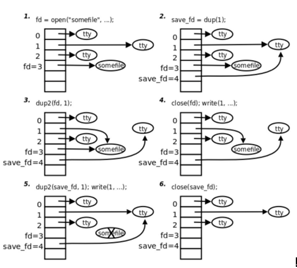

00. 目录01. 学习目标02. 文件操作相关函数2.1 stat函数(重点)2.2 access函数2.3 chmod函数2.4 chown函数2.5 truncate函数 2.6 link函数2.7 symlink函数2.8 readlink函数2.9 unlink函数 2.10 rename函数 03. 文件描述符复制(重点)3.1 概述3.1 dup函数3.2 dup2函数3.3 示例分析04. fcnlt函数05. 目录相关操作(掌握)5.1 getcwd函数 5.2 chdir函数5.3 opendir函数5.4 closedir函数5.5 readdir函数06. 时间相关函数
x
15int stat(const char *path, struct stat *buf);6int lstat(const char *pathname, struct stat *buf);7功能：8 获取文件状态信息9 stat和lstat的区别：10 当文件是一个符号链接时，lstat返回的是该符号链接本身的信息；11 而stat返回的是该链接指向的文件的信息。12参数：13 path：文件名14 buf：保存文件信息的结构体15返回值：16 成功： 017 失败: -1
struct stat结构体说明：
x
1struct stat {2 dev_t st_dev; //文件的设备编号3 ino_t st_ino; //节点4 mode_t st_mode; //文件的类型和存取的权限5 nlink_t st_nlink; //连到该文件的硬连接数目，刚建立的文件值为16 uid_t st_uid; //用户ID7 gid_t st_gid; //组ID8 dev_t st_rdev; //(设备类型)若此文件为设备文件，则为其设备编号9 off_t st_size; //文件字节数(文件大小)10 blksize_t st_blksize; //块大小(文件系统的I/O 缓冲区大小)11 blkcnt_t st_blocks; //块数12 time_t st_atime; //最后一次访问时间13 time_t st_mtime; //最后一次修改时间14 time_t st_ctime; //最后一次改变时间(指属性)15};st_mode(16位整数)参数说明

文件类型判断应使用宏函数

测试程序：
xxxxxxxxxx121int main()2{3 struct stat buf;4 stat("a.txt", &buf);56 if (S_ISREG(buf.st_mode))7 {8 printf("%s\n", "这是普通文件");9 }1011 return 0;12}
x
13int access(const char *pathname, int mode);4功能：测试指定文件是否具有某种属性5参数：6 pathname：文件名7 mode：文件权限，4种权限8 R_OK： 是否有读权限9 W_OK： 是否有写权限10 X_OK： 是否有执行权限11 F_OK： 测试文件是否存在12返回值：13 0： 有某种权限，或者文件存在14 -1：没有，或文件不存在xxxxxxxxxx11access("txt", F_OK);
x
13int chmod(const char *pathname, mode_t mode);4功能：修改文件权限5参数：6 filename：文件名7 mode：权限(8进制数)8返回值：9 成功：010 失败：-1
x
13int chown(const char *pathname, uid_t owner, gid_t group);4功能：修改文件所有者和所属组5参数：6 pathname：文件或目录名7 owner：文件所有者id，通过查看 /etc/passwd 得到所有者id8 group：文件所属组id，通过查看 /etc/group 得到用户组id9返回值：10 成功：011 失败：-1x
14int truncate(const char *path, off_t length);5功能：修改文件大小6参数：7 path：文件文件名字8 length：指定的文件大小9 a)比原来小, 删掉后边的部分10 b)比原来大, 向后拓展11返回值：12 成功：013 失败：-1
x
13int link(const char *oldpath, const char *newpath);4功能：创建一个硬链接5参数：6 oldpath：源文件名字7 newpath：硬链接名字8返回值：9 成功：010 失败：-1
x
13int symlink(const char *target, const char *linkpath);4功能：创建一个软链接5参数：6 target：源文件名字7 linkpath：软链接名字8返回值：9 成功：010 失败：-1x
13ssize_t readlink(const char *pathname, char *buf, size_t bufsiz);4功能：读软连接对应的文件名，不是读内容(该函数只能读软链接文件)5参数：6 pathname：软连接名7 buf：存放软件对应的文件名8 bufsiz ：缓冲区大小(第二个参数存放的最大字节数)9返回值：10 成功：>0，读到buf中的字符个数11 失败：-112x
13int unlink(const char *pathname);4功能：删除一个文件(软硬链接文件)5参数：6 pathname：删除的文件名字7返回值：8 成功：09 失败：-1
x
13int rename(const char *oldpath, const char *newpath);4功能：把oldpath的文件名改为newpath5参数：6oldpath：旧文件名7newpath：新文件名8返回值：9成功：010失败：-1
dup() 和 dup2() 是两个非常有用的系统调用，都是用来复制一个文件的描述符，使新的文件描述符也标识旧的文件描述符所标识的文件。
这个过程类似于现实生活中的配钥匙，钥匙相当于文件描述符，锁相当于文件，本来一个钥匙开一把锁，相当于，一个文件描述符对应一个文件，现在，我们去配钥匙，通过旧的钥匙复制了一把新的钥匙，这样的话，旧的钥匙和新的钥匙都能开启这把锁。
对比于 dup(), dup2() 也一样，通过原来的文件描述符复制出一个新的文件描述符，这样的话，原来的文件描述符和新的文件描述符都指向同一个文件，我们操作这两个文件描述符的任何一个，都能操作它所对应的文件。
x
13int dup(int oldfd);4功能：5 通过 oldfd 复制出一个新的文件描述符，新的文件描述符是调用进程文件描述符表中最小可用的文件描述符，最终 oldfd 和新的文件描述符都指向同一个文件。6参数：7 oldfd : 需要复制的文件描述符 oldfd8返回值：9 成功：新文件描述符10 失败： -1
x
13int dup2(int oldfd, int newfd);4功能：5 通过 oldfd 复制出一个新的文件描述符 newfd，如果成功，newfd 和函数返回值是同一个返回值，最终 oldfd 和新的文件描述符 newfd 都指向同一个文件。6参数：7 oldfd : 需要复制的文件描述符8 newfd : 新的文件描述符，这个描述符可以人为指定一个合法数字（0 - 1023），如果指定的数字已经被占用（和某个文件有关联），此函数会自动关闭 close() 断开这个数字和某个文件的关联，再来使用这个合法数字。9返回值：10 成功：返回 newfd11 失败：返回 -1

x
14int fcntl(int fd, int cmd, ... /* arg */);5功能：改变已打开的文件性质，fcntl针对描述符提供控制。6参数：7 fd：操作的文件描述符8 cmd：操作方式9 arg：针对cmd的值，fcntl能够接受第三个参数int arg。10返回值：11 成功：返回某个其他值12 失败：-1fcntl函数有5种功能：
1) 复制一个现有的描述符（cmd=F_DUPFD）
2) 获得／设置文件描述符标记(cmd=F_GETFD或F_SETFD)
3) 获得／设置文件状态标记(cmd=F_GETFL或F_SETFL)
4) 获得／设置异步I/O所有权(cmd=F_GETOWN或F_SETOWN)
5) 获得／设置记录锁(cmd=F_GETLK, F_SETLK或F_SETLKW)
参考示例：
xxxxxxxxxx281// 等价于dup()2 int new_fd = fcntl(fd, F_DUPFD, 0);34 // 获取文件状态标志5 int flag = fcntl(fd, F_GETFL, 0);6 switch (flag & O_ACCMODE)7 {8 case O_RDONLY:9 printf("read only\n");10 break;11 case O_WRONLY:12 printf("write only\n");13 break;14 case O_RDWR:15 printf("read and write\n");16 break;17 default:18 break;19 }2021 if (flag & O_APPEND)22 {23 printf("append\n");24 }2526 flag |= O_APPEND; // 追加flag27 fcntl(fd, F_SETFL, flag); //设置文件状态标记28
xxxxxxxxxx1013char *getcwd(char *buf, size_t size);4功能：获取当前进程的工作目录5参数：6 buf : 缓冲区，存储当前的工作目录7 size : 缓冲区大小8返回值：9 成功：buf中保存当前进程工作目录位置10 失败：NULL
xxxxxxxxxx913int chdir(const char *path);4功能：修改当前进程(应用程序)的路径5参数：6 path：切换的路径7返回值：8 成功：09 失败：-1
xxxxxxxxxx1114DIR *opendir(const char *name);5功能：打开一个目录6参数：7 name：目录名8返回值：9 成功：返回指向该目录结构体指针10 失败：NULL11
xxxxxxxxxx1114int closedir(DIR *dirp);5功能：关闭目录6参数：7 dirp：opendir返回的指针8返回值：9 成功：010 失败：-111
xxxxxxxxxx1013struct dirent *readdir(DIR *dirp);4功能：读取目录5参数：6 dirp：opendir的返回值7返回值：8 成功：目录结构体指针9 失败：NULL10相关结构体说明：
xxxxxxxxxx81struct dirent2{3 ino_t d_ino; // 此目录进入点的inode4 off_t d_off; // 目录文件开头至此目录进入点的位移5 signed short int d_reclen; // d_name 的长度, 不包含NULL 字符6 unsigned char d_type; // d_type 所指的文件类型 7 char d_name[256]; // 文件名8};d_type文件类型说明：
| 取值 | 含义 |
|---|---|
| DT_BLK | 块设备 |
| DT_CHR | 字符设备 |
| DT_DIR | 目录 |
| DT_LNK | 软链接 |
| DT_FIFO | 管道 |
| DT_REG | 普通文件 |
| DT_SOCK | 套接字 |
| DT_UNKNOWN | 未知 |
utime
time
x1char *asctime(const struct tm *tm);2char *asctime_r(const struct tm *tm, char *buf);34char *ctime(const time_t *timep);5char *ctime_r(const time_t *timep, char *buf);67struct tm *gmtime(const time_t *timep);8struct tm *gmtime_r(const time_t *timep, struct tm *result);910struct tm *localtime(const time_t *timep);11struct tm *localtime_r(const time_t *timep, struct tm *result);1213time_t mktime(struct tm *tm);